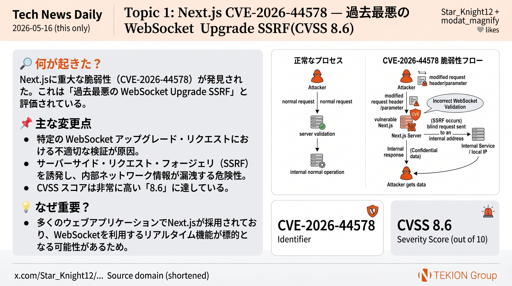

🔧 セキュリティ · Star_Knight12 (security researcher) / modat_magnify
Next.js 過去最悪の脆弱性 CVE-2026-44578 — WebSocket Upgrade SSRF (CVSS 8.6)

Next.js に CVSS 8.6 の SSRF 脆弱性 CVE-2026-44578 が判明。13.4.13+ / 14.x / 15.x / 16.0.0–16.2.4 が影響を受け、WebSocket Upgrade リクエストを介したサーバサイドリクエストフォージェリで、認証不要・単発リクエストで内部サービス / クラウド認証情報 / API キー / 管理パネルへのリクエストを攻撃者が強制可能。
- CVE-2026-44578、CVSS 8.6 (High)
- 影響範囲: Next.js 13.4.13 以降の全 14/15 系、および 16.0.0–16.2.4
- 攻撃手法: WebSocket Upgrade ヘッダ経由の SSRF
- 認証不要、1 つの細工リクエストで成立
SRC @Star_Knight12
TOPIC 01 / 07
続きを読む →